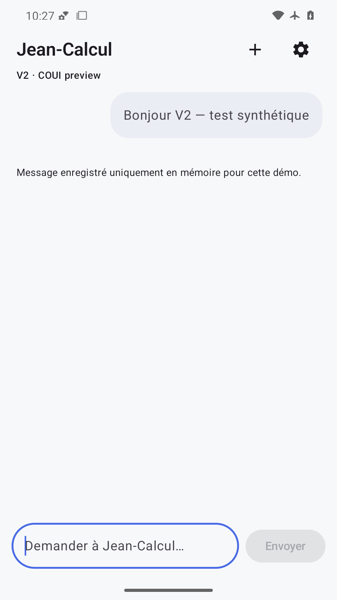
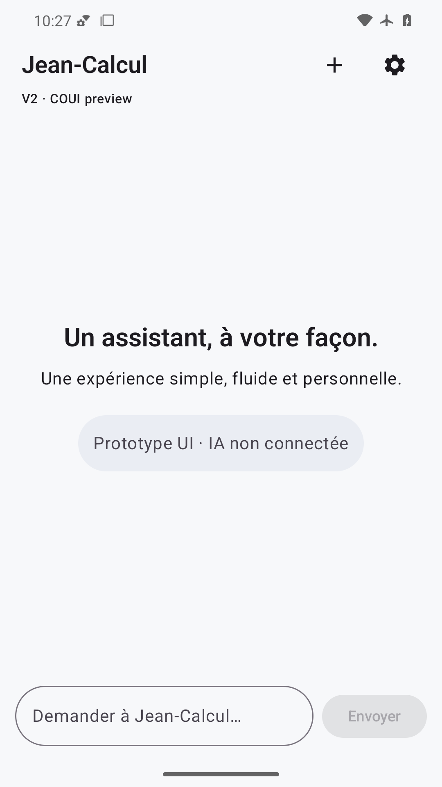
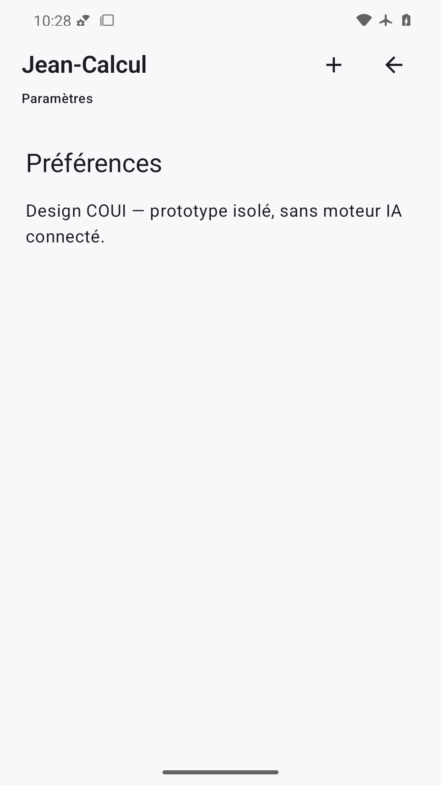
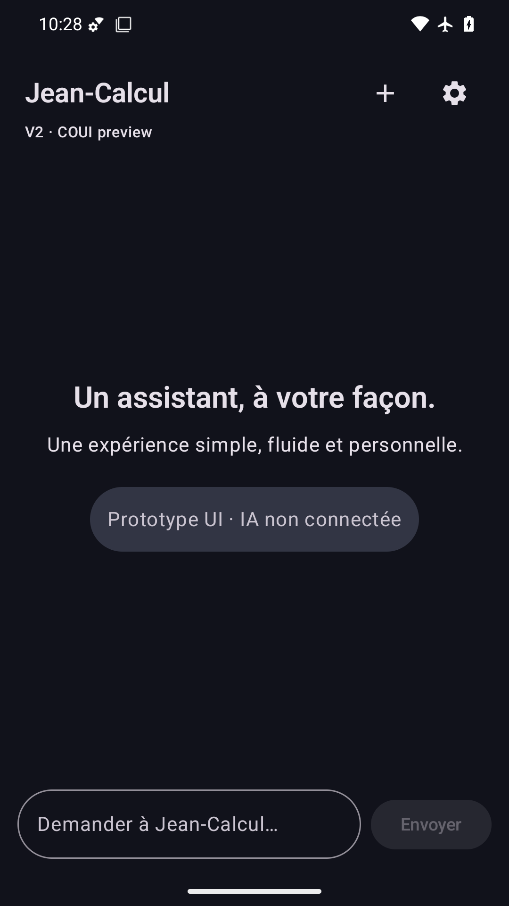
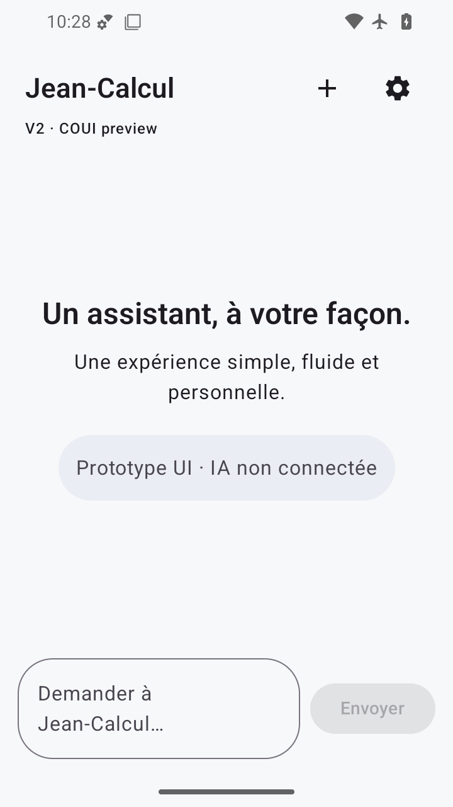
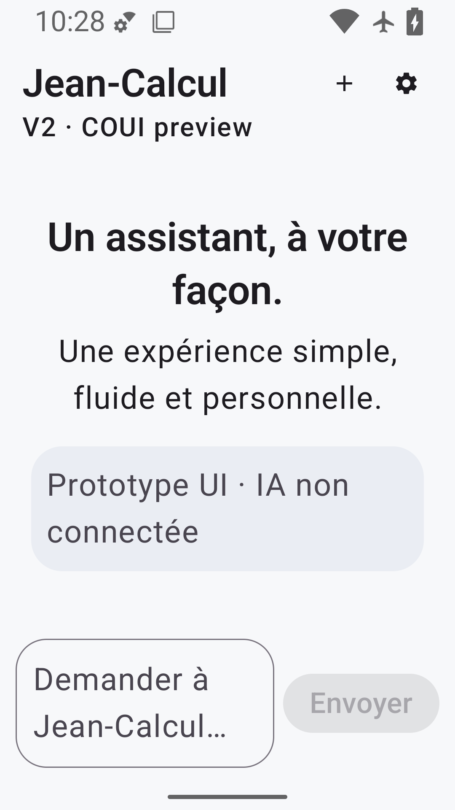
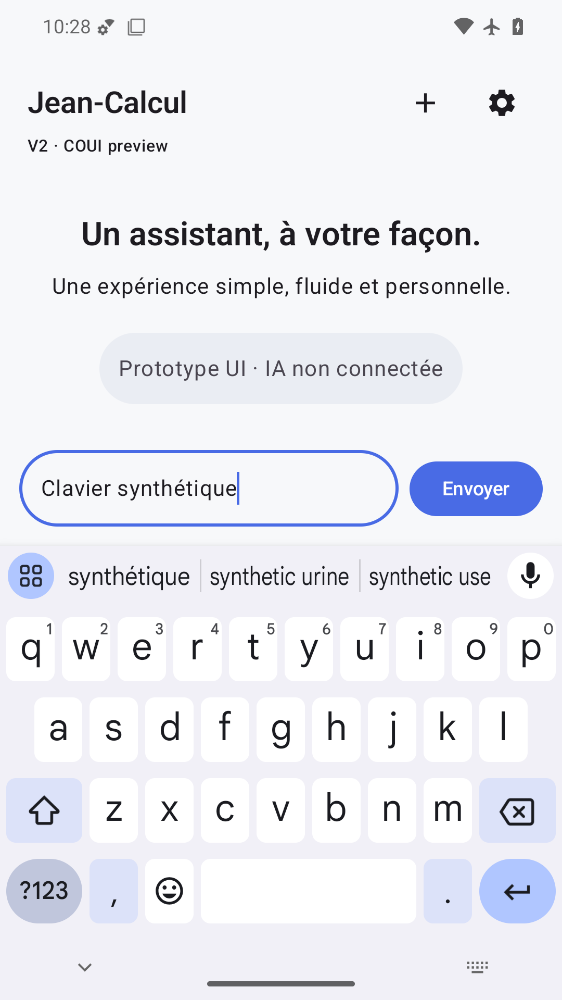
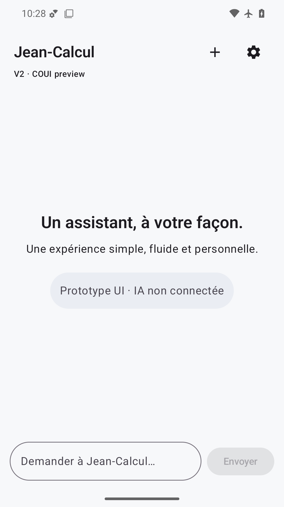
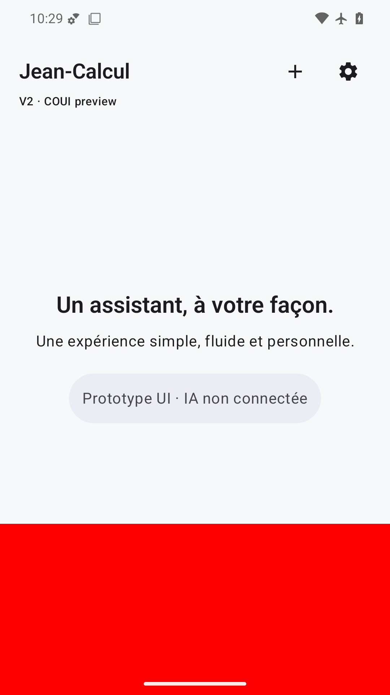

Accueil et mention prototype entièrement lisibles. Statut sombre sur fond clair ; saisie séparée du geste Android. Titre et actions compacts visibles.

Bulle synthétique à droite et avertissement mémoire lisibles, champ vide et bouton désactivé. Barres système distinctes du contenu.

Accueil vide restauré, bulle supprimée et champ remis à zéro ; contraste système et marges conservés.

Préférences et avertissement sans moteur IA lisibles ; retour au chat visible et retour système testé par SmokeTest. Pas de réglages fictifs.

Textes clairs et puce contrastés sur surfaces sombres, actions visibles, champ au-dessus de la navigation Android.

360×640 dp : titre/actions et avertissement visibles, placeholder sur deux lignes sans débordement, navigation dégagée.

À 200 %, titre sur une ligne et avertissement complet sur deux lignes, aucun texte tronqué. Champ/envoi accessibles et séparés du geste Android.

Clavier système visible ; champ saisi et envoi actif au-dessus de l’IME. En-tête vérifié également par agrandissement diagnostic de la capture : titre, Nouveau et Réglages visibles.

Rendu statique lisible, statut contrasté et marges système correctes avec animations désactivées. Le PNG ne valide pas la fluidité physique.

FAIL volontaire : bande rouge opaque masque entièrement le champ et Envoyer sur la partie basse ; défaut visuel effectivement détecté.